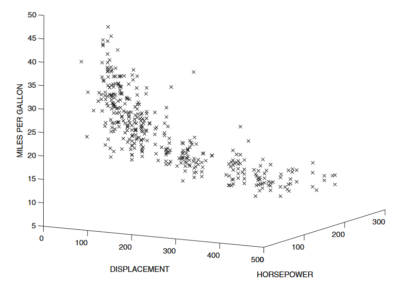

Deri Siswara
Outlier adalah sebuah pengamatan yang nilainya sangat berbeda jauh dari pengamatan lainnya, sehingga menimbulkan kecurigaan bahwa data tersebut mungkin berasal dari proses atau sumber yang berbeda.
Metode analisis outlier memiliki dua tipe output anslisis outlier, yaitu outlier scores (outlierness) dan label biner (outlier atau tidak).
Outlier dapat berupa noise atau anomali. Tidak ada batasan yang jelas, semuanya bersifat subjektif tergantung pada analisis dan tujuan yang ingin dicapai.
Hampir semua algoritma deteksi outlier membangun model pola normal dalam data dan menghitung skor outlier berdasarkan deviasi dari pola tersebut. Oleh sebab itu, pemilihan model data sangat krusial. Sebagai contoh, metode deteksi outlier dengan Z-Score membutuhkan asumsi distribusi normal pada data.
Contoh lain: Model berbasis regresi akan paling cocok untuk menemukan pencilan dalam distribusi data pada Gambar berikut.
Metode analisis outlier berbasis model probabilistik dan statistik atau sebaran (distribusi data) populer sejak abad kesembilan belas. Misal metode Z-Score, IQR, dan Mahalanobis Distance. Kelemahan dari pendekatan ini adalah ketergantungan pada asumsi distribusi yang spesifik.
Atribut data di real world umumnya saling berkorelasi. Ketergantungan ini memungkinkan kita untuk saling memprediksi antar data. Outlier adalah nilai yang menyimpang dari nilai yang diharapkan (atau diprediksi) berdasarkan suatu model linear tertentu. Efektif saat korelasi tinggi dan dimensi rendah.

Model berbasis kedekatan (proximity-based) mendefinisikan suatu titik data sebagai outlier apabila tingkat ketidakdekatan atau ketidakmiripan cukup jauh. Kedekatan sebuah titik data dapat didefinisikan dengan berbagai cara yang berbeda. Efektif ketika data mengandung sedikit noise.
Metode ini menggabungkan hasil output dari beberapa algoritma atau metode menjadi satu hasil. Ide dasarnya adalah bahwa beberapa algoritma mungkin bekerja lebih baik pada bagian data tertentu, sementara algoritma lain lebih unggul pada bagian data yang berbeda.
Dalam membuat metode ensemble, ada dua pilihan penting:
Pemilihan Base Detector: Langkah awal adalah memilih base detector. Base detector ini berupa metode yang berbeda, parameter yang berbeda, atau bahkan data yang telah direkonstruksi dari data asli.
Normalisasi dan Penggabungan Skor: Setiap detector mungkin menghasilkan skor dengan skala yang berbeda. Misalnya, detector k-nearest neighbor menghasilkan skor berupa jarak mentah, sedangkan algoritma LOF memberikan nilai yang sudah dinormalisasi. Karena perbedaan ini, penting untuk menormalkan skor dari berbagai detector sehingga dapat digabungkan. Setelah dinormalisasi, kita harus memilih cara untuk menggabungkan skor—umumnya dengan mengambil rata-rata atau nilai maksimum dari skor-skor tersebut.
Data bisa jauh lebih kompleks baik dalam hal jenis atribut maupun ketergantungan antar titik, seperti terlihat pada contoh data dunia nyata yang mencakup atribut kategorikal, teks, dan campuran.
Time Series Data: Data yang diukur dan dicatat secara berurutan sepanjang waktu—biasanya pada interval yang konsisten—sehingga kita dapat melihat tren atau pola dari waktu ke waktu.
Data Streaming: Data yang terus mengalir secara real-time. Data ini diproses seketika saat diterima dan tidak selalu tersimpan secara lengkap.
Suatu nilai dianggap outlier jika tidak konsisten dengan data sebelumnya, baik dalam jangka pendek (perubahan tiba-tiba) maupun jangka panjang (pola atau bentuk yang berbeda). Jika seluruh deret waktu tersedia secara offline, kita bisa memanfaatkan data historis untuk mendeteksi anomali. Jika ada beberapa data deret waktu, korelasi antar deret juga bisa dipertimbangkan, meskipun data time series sangat bergantung pada konteks waktu.
Outlier pada data deret waktu belum bisa dikatakan sebagai anomali. Outlier bisa jadi novelty atau pola baru yang belum terdeteksi sebelumnya. Bisa dalam bentuk:
Perubahan tren agregat (kolektif). Pola subsekuens data berubah.
Perubahan pada titik individual (kontekstua). Titik data baru yang sangat berbeda dari data sebelumnya.
Metode deteksi outlier pada data deret waktu streaming (real-time) dengan pendekatan prediksi, di mana titik data dianggap outlier (kontekstua) jika nilainya menyimpang secara signifikan dari nilai yang diprediksi oleh model (Misal regresi). Metode ini mengandalkan dua jenis korelasi:
Dalam banyak kasus, beberapa data telah dilabeli sebagai ourlier atau anomali sehingga kita bisa melatih model pendeteksian outlier secara terawasi (supervised). Model ini menggunakan label untuk mengidentifikasi anomali sesuai dengan kebutuhan aplikasi, sehingga hasilnya bisa berbeda dengan metode yang tidak punya label (unsupervised). The general recommendation for outlier analysis is to always use supervision where possible.
3, 2, 3, 2, 3, 87, 2, 2, 3, 3, 3, 84, 91, 86, 91, 81
Dalam konteks unsupervised,nilai 87 dan 84 bisa dianggap sebagai outlier. Dalam konteks transaksi kartu kredit, data historis yang sudah dilabeli menunjukkan bahwa pola nilai yang tinggi secara berurutan dapat dianggap sebagai anomali. Artinya, jika hanya terjadi satu nilai tinggi (misalnya 87) yang muncul secara terpisah, hal itu tidak dianggap anomali. Namun, jika nilai tinggi seperti 84 muncul dan diikuti oleh nilai-nilai tinggi lainnya, secara keseluruhan pola tersebut dianggap sebagai anomali karena menunjukkan perubahan tren yang tidak normal (Kolektif).
Evaluasi algoritma atau metode analisis outlier itu sulit karena outlier jarang terjadi dan data label (ground truth) sering tidak tersedia, terutama dalam skenario unsupervised. Banyak penelitian menggunakan validasi internal untuk evaluasi. Metode evaluasi internal (misalnya, mengukur “kebaikan” model dengan metrik seperti mean-squared radius) bisa dimanipulasi oleh algoritma tertentu sehingga tidak sepenuhnya andal. Dengan kata lain, interpretasinya bisa berbeda tergantung pada algoritma yang digunakan. Oleh karena itu, evaluasi eksternal lebih sering digunakan, yaitu dalam kerangka supervised. Evaluasi trade-off antara false positives dan false negatives diukur dengan metrik seperti precision dan recall.
Pemilihan Paramter: Kesalahan umum dalam benchmarking algoritma analisis outlier terjadi ketika parameter yang ditetapkan oleh pengguna (misalnya, nilai k pada k-nearest neighbor) dioptimalkan dengan menggunakan label outlier. Hal ini bisa menyebabkan overfitting dan hasil yang bias.
Risiko Overfitting: Model yang terlalu kompleks bisa menghasilkan hasil yang sangat baik pada data pelatihan, tetapi buruk pada data baru. Perlu dilakukan validasi eksternal dan evaluasi berkala untuk menghindari overfitting.
Peran Pengalaman Analis: Karena dalam setting unsupervised tidak ada ground truth yang pasti, desain eksperimen dan pemilihan parameter sangat bergantung pada pengalaman dan penilaian yang baik dari analis (Expert Judgment.
Sangat mustahil untuk mengidentifikasi algoritma optimal tanpa adanya ground truth. Karena masalah analisis outlier bersifat unsupervised, efektivitas suatu algoritma pada suatu dataset bergantung pada “keberuntungan” dalam mencerminkan distribusi sebenarnya dari data normal.
@2025 - Deri Siswara